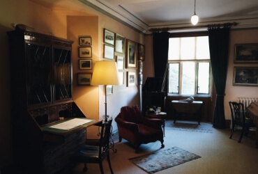
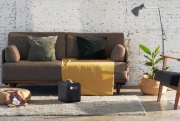
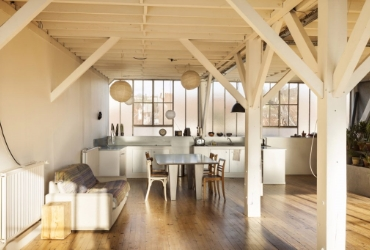
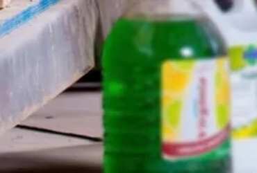
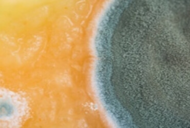

-
Mars 26, 2021
OZONMASKIN ELLER OZONRENGÖRARE MOT DÅLIG LUKT
Ozonmaskin eller ozonrengörare mot dålig lukt Ozonmaskin eller ozonrengörare är en maskin som tar bort dålig lukt. Ozon är ett …
-
December 15, 2020
OZONRENGÖRING – FARLIGT ELLER INTE?
Att enomföra en ozonbehandling med Ozoneair är en säker process som ger ett tydligt resultat. Ozon i stora mängder kan …
-
December 1, 2020
RENA LUFTEN MED OZON
Säg inpyrd rök i bilen eller mögellukt i badrummet – och det får vem som helst att rynka på näsan. …
-
November 25, 2020
PENTAKLORFENOL MISSTAS FÖR MÖGEL
Ozonmaskin eller ozonrengörare mot dålig lukt Ozonmaskin eller ozonrengörare är en maskin som tar bort dålig lukt. Ozon är ett …
-
November 10, 2020
FÅ BORT RÖKLUKT
Röklukt sätter sig snabbt i väggar, möbler och textiler. Den distinkta lukten kan kännas omöjlig att få bort – men …
-
Oktober 30, 2020
LUKTBORTTAGARE MOT DÅLIG LUKT
Ett hem som doftar gott känns välkomnande och hemtrevligt. Men en enda unken lukt får vem som helst att vilja …